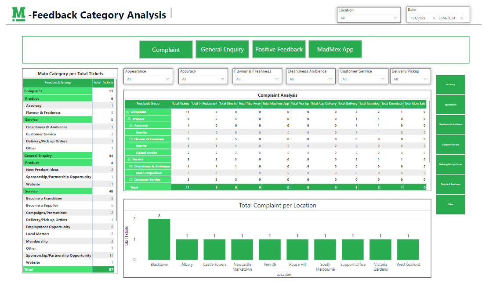
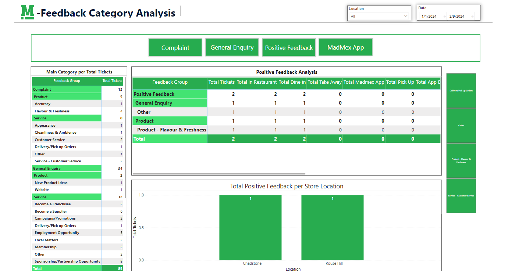
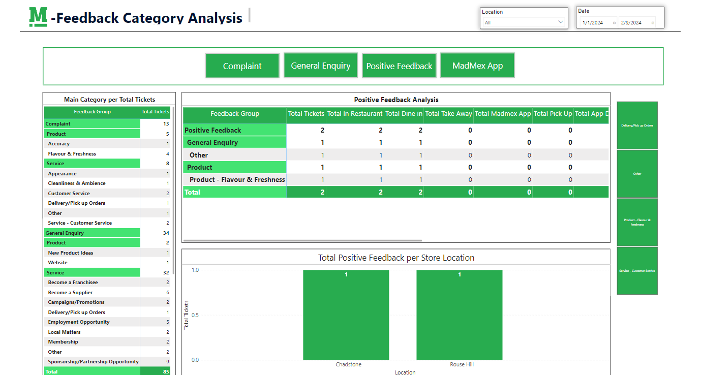

Customer Feedback Category Analysis Report
This Powerbi Report provides comprehensive overview of the 4 key categories of Madmex customer feedback ticketing in JIRA (Complaint, General Feedback, Positive Feedback, and Madmex App). This report is important for Operations to determine the number of complains per store and what are these complaints in order to make business decisions and improve service. Above photo shows the complaint analysis with its drilled through sub categories. This report has filters from its sub category ,Location, and date
 


Aside from complaints, This report has buttons to route you to the other main categories such as general enquiry, Positive Feedback, and Madmex App. This report is currently live and used by operations for their boardpack report every month and weekly Meetings. Scheduled refresh is every Mon,Wed, and Fri around 6:00AM every week. Data set is connected via JIRA web service.